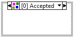

Type Specialization Structure
Owning Palette: Structures
Requires: Base Development System
Has one or more subdiagrams, exactly one of which LabVIEW compiles and executes, depending on the order and the compilation result of the subdiagram. LabVIEW declines subdiagrams in order if they have syntax errors. LabVIEW accepts the first subdiagram that does not have syntax errors and ignores the remaining subdiagrams. If all subdiagrams have syntax errors, this structure accepts the last subdiagram. Syntax errors are errors within the structure, such as broken wires, not errors caused by subVIs or other dependencies.
Use this structure to customize sections of code in a malleable VI (.vim) for specific data types. You also can use this structure in conjunction with the Assert Type VIs and functions to force a malleable VI to accept only a subset of the acceptable data types or to decline specific data types.

 Add to the block diagram Add to the block diagram |
 Find on the palette Find on the palette |
After you create a Type Specialization structure, you can add, duplicate, rearrange, or delete the subdiagrams. To scroll through the available subdiagrams, click the decrement and increment arrows in the selector label. You also can remove the structure without deleting objects in the structure.
The Type Specialization structure allows you to disable specific sections of code on the block diagram based on compilation results. To disable specific sections of code on the block diagram based on some user-defined condition, use the Conditional Disable structure. To disable a section of a block diagram, use the Diagram Disable structure.
To switch to a Conditional Disable or Diagram Disable structure, right-click the border of the Type Specialization structure and select Replace with Conditional Disable Structure or Replace with Diagram Disable Structure from the shortcut menu.
Example
Refer to the Malleable VIs - Type Specialization Structure.lvproj in the labview\examples\Malleable VIs\Type Specialization Structure directory for an example of using the Type Specialization Structure.
 Open example Find related examples
Open example Find related examples